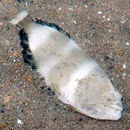
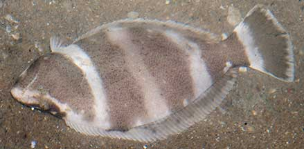

|
|
| fishes text index | photo index |
| Phylum Chordata > Subphylum Vertebrata > fishes > Order Pleuronectiformes |
| Halibuts Family Psettodidae updated Oct 2020 Where seen? The Indian halibut (Psettodes erumei) is sometimes seen on some of our shores, often near seagrasses. What are halibuts? They are flatfishes that belong to the Family Psettodidae. According to FishBase: the family has 1 genera and 3 species found in West Africa and the Indo-West Pacific. They are considered the most primitive of the flatfishes for some of their body characteristics and their habit of often swimming in an upright position. The only species that occurs in our region is the Indian halibut (Psettodes erumei). Features: The Indian halibut grows to about 60cm, the one seen was about 20cm long. Eyes small and may be on the right or left side. It doesn't look as specialised as the other flatfishes. It looks very much like a 'normal' fish that is flat (but thicker than other flatfishes). Besides swimming on its side, it may also swim upright like other 'normal' fishes. The tail fin is well separated from the dorsal and anal fins, and the mouth is very large with fang-like teeth. Even its tongue has minute teeth! Usually brown or grey, sometimes it has 4-5 broad dark cross bars. The dorsal, anal and tail fin tips are black. Sometimes confused with other flatfishes. Here's more on how to tell apart the flatfish families commonly seen. |
 Juvenile Indian halibut (about 3cm long) Tuas, Mar 12 |
 Indian halibutL Large mouth with fang-like teeth. Tail fin well separated from dorsal and anal fins. Changi, Jun 09 |
| What does it eat? The Indian halibut hunts mainly other
fishes on the muddy and sandy bottom. During the day it lies deeply
buried in the sand and it only comes out at night. Human uses: It is harvested for the food trade and sold fresh, frozen or smoked. In some places it is processed into fish flour. |
| Halibuts on Singapore shores |
On wildsingapore
flickr
|
| Other sightings on Singapore shores |
| Family
Psettodidae recorded for Singapore From Lim, Kelvin K. P. & Jeffrey K. Y. Low, 1998. A Guide to the Common Marine Fishes of Singapore.
|
Links
References
|